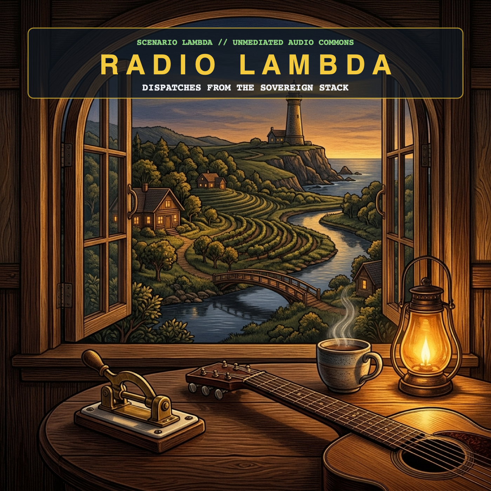

EPISODE 02 // MEGA-BROADCAST • 1:08:21
No Floating Points in the Basement: Inside Layers 1 to 4
A 68-minute deep dive into the Cybernetic Basement: Layer 1 Physical Reality & The Rule of the Red Lever, Layer 1b Oasis 10,000-tick Canary rehearsals, Layer 2 Zephyr RTOS spinal-cord reflexes, Layer 3 integer thermodynamics & Pairwise BCC channels, and Layer 4's 10 Hz deterministic orchestrator.
> VIDEO STREAM: 02.episode_youtube.mp4 (30 Walking Landscapes + 44.1 kHz AAC • 1:08:21)
SPEED:
Jump to Act / Part Markers
Episode Show Notes & Architectural Anchors
Companion Song Lyrics

SEASON 01 // 11-EPISODE ARC
Dispatches from the Sovereign Stack
Hosted by Sam Vance & Clara Lin • 10h 45m total runtime across 150 walking scenes.
Broadcast Schedule (Click to Switch)
▶ LIVE • 18:55
Ep. 01 — Pry-Bar at 2:38 AM: Why the Stack Exists
Origin crisis, 7-Layer overview,
bp units, and $N=1$ to watershed governance (15 walking scenes).
▶ LIVE MEGA-DIVE • 1:08:21
Ep. 02 — No Floating Points in the Basement (Layers 1–4)
The Red Lever, Oasis 10,000-tick Canary,
<10 ms saw reflexes, Fault-Before-Malice, Pairwise BCC, and the 72h compost clock (30 walking scenes).
▶ LIVE V1 • 28:18
Ep. 03 (v1) — When the Interface Knows How to Be Quiet (Layers 5–7)
Initial 28-minute cut covering scale-adaptive governance, Constellation lenses, and Layer 7 reach (15 walking scenes).
▶ LIVE DIRECTOR'S CUT • 1:11:45
Ep. 03.02 — Kinship, Ostrom Commons, Indigenous Ontologies & Circular Layer 7
71-minute deep dive into Ostrom's 8 principles, Chosen Kinship, pluralistic RDF Named Graphs, and Healthy Circular Extraction + Catered GPO Sourcing (35 walking scenes).
▶ LIVE MEGA-DIVE • 54:00
Ep. 04 — 20-Year Laptops, Walk-In Sanctuary & The Brass Rest Latch
Wave A: Scenarios
Zero, Tau, and Sigma (30 walking scenes).
▶ LIVE MEGA-DIVE • 58:09
Ep. 05 — Pea Soup, Shop-Floor LOTO & Cargo-Trike Sneakernet
Wave B: Scenarios
Gamma, Alpha, and Beta (30 walking scenes).
▶ LIVE MEGA-DIVE • 1:00:54
Ep. 06 — The 90-Day Cocoon, Chosen Kin & Screenless Homes
Wave C: Scenarios
Delta, Omicron, Kappa, and Zeta (30 walking scenes).
▶ LIVE MEGA-DIVE • 55:24
Ep. 07 — Mother-Tree Vetoes, Solar Crucibles & Reversible Timber
Wave D: Scenarios
Eta, Mu, Theta, Nu, and Xi (30 walking scenes).
▶ LIVE MEGA-DIVE • 1:03:49
Ep. 08 — Zero-ID Cafés, Null-Result Science & Unmediated Music
Wave E: Scenarios
Epsilon, Iota, Lambda, and Pi (29 walking scenes).
▶ LIVE MEGA-DIVE • 58:40
Ep. 09 — Red Pull-Cords, Open-Hearth Storms & Emeritus Sages
Wave F (Part 1): Scenarios
Chi, Upsilon, and Phi (30 walking scenes).
▶ LIVE MEGA-DIVE • 56:14
Ep. 10 — Peace Hearths, Fault-Before-Malice & The Planetary Lighthouse
Wave F (Part 2): Scenarios
Psi, Rho, and Omega (30 walking scenes).
▶ LIVE SEASON FINALE • 51:51
Ep. 11 — The Minimum Viable Society & The Historical Rupture
Season 1 Grand Finale: Full MVS retrospective (Waves A–F, Non-Stewards), Marx/Lenin/Trotsky, China & Tolkien's One Ring, and the Medieval Centering Arch (36 walking scenes).